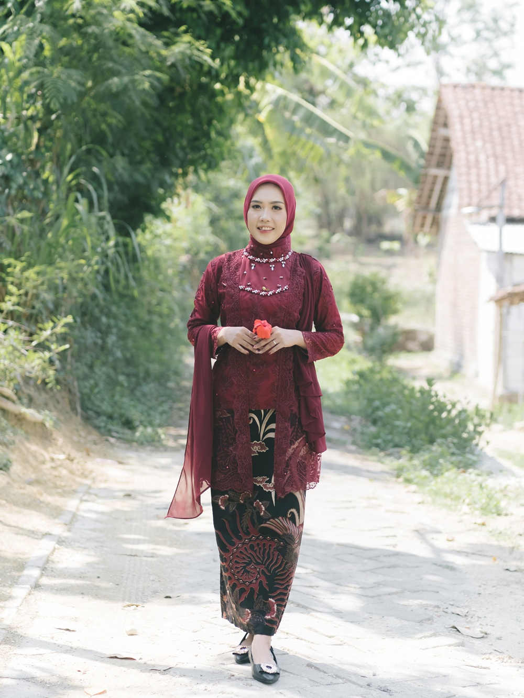
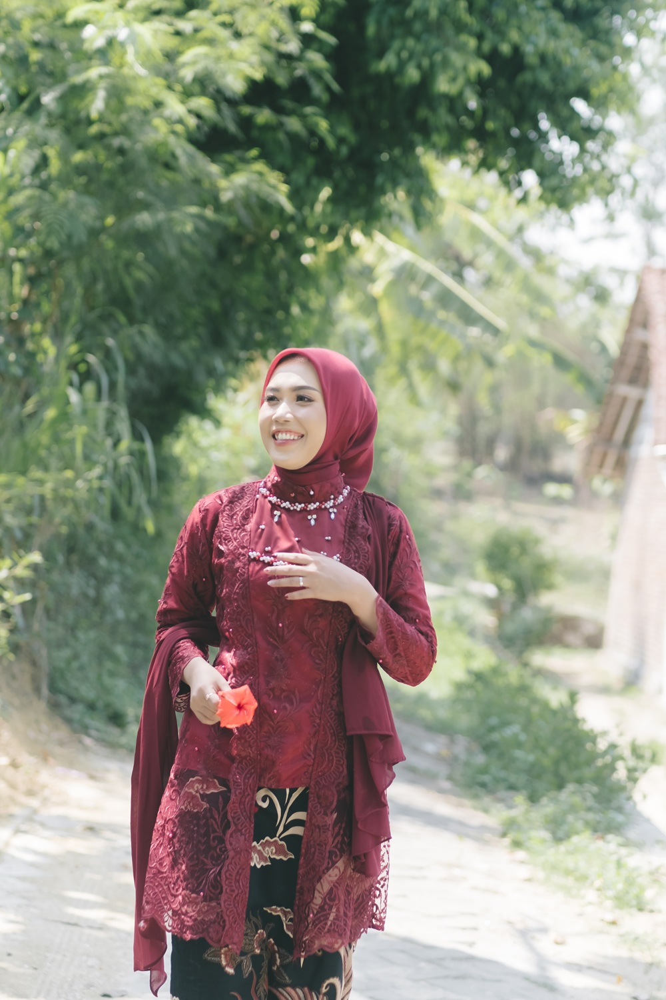

Inspirasi dan Tujuan Mengikuti PPG
Program Pendidikan Profesi Guru (PPG) menjadi langkah penting dalam mengembangkan kompetensi sebagai calon pendidik profesional yang mampu menghadapi tantangan pendidikan di era modern.

Motivasi Mengikuti PPG
Saya terinspirasi mengikuti Program Pendidikan Profesi Guru (PPG) karena memiliki keinginan kuat untuk menjadi guru profesional yang mampu memberikan pembelajaran berkualitas dan bermakna bagi peserta didik.
Guru bukan hanya sebagai penyampai materi, tetapi juga sebagai pembimbing, motivator, dan teladan dalam membentuk karakter generasi masa depan.
Selain itu, perkembangan teknologi dan dunia pendidikan menuntut guru untuk lebih kreatif, inovatif, dan mampu memanfaatkan teknologi digital dalam pembelajaran.
Melalui Program PPG, saya ingin meningkatkan kompetensi pedagogik, profesional, sosial, dan kepribadian agar mampu menjadi guru yang inspiratif dan adaptif terhadap perubahan zaman.

Tujuan Mengikuti PPG
1. Mengembangkan kompetensi sebagai guru profesional.
2. Meningkatkan kemampuan dalam merancang pembelajaran inovatif.
3. Menguasai teknologi pendidikan dan media pembelajaran digital.
4. Membentuk karakter peserta didik melalui pembelajaran bermakna.
5. Memperoleh pengalaman praktik mengajar secara nyata di sekolah.
6. Menjadi pendidik yang kreatif, adaptif, dan inspiratif.

Harapan Setelah Mengikuti PPG
Melalui Program Pendidikan Profesi Guru, saya berharap mampu menjadi pendidik yang profesional, inovatif, dan mampu menciptakan pembelajaran yang aktif, kreatif, serta menyenangkan bagi peserta didik.
Selain itu, saya juga berharap dapat memberikan kontribusi nyata dalam meningkatkan kualitas pendidikan dan menjadi guru yang mampu menginspirasi generasi masa depan.